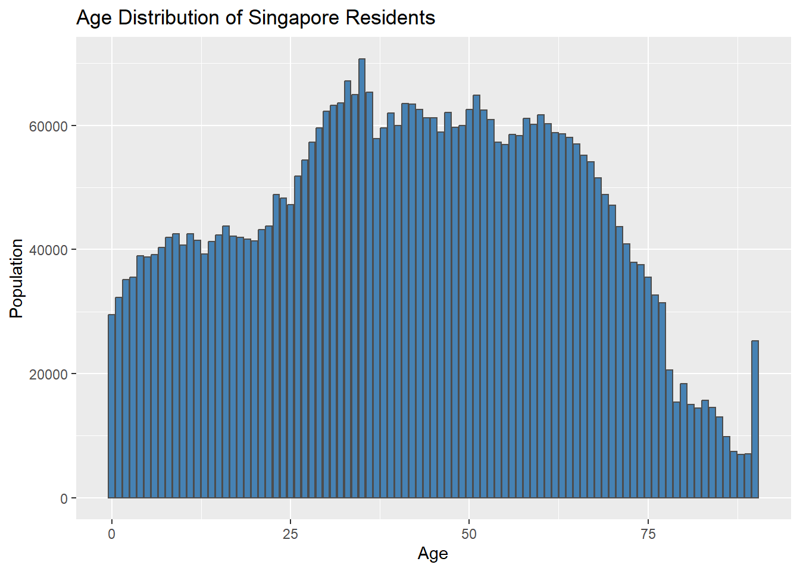

pacman::p_load(dplyr, tidyverse, scales, forcats, DT, knitr)Take-home_Ex01
1. Background
Singapore is a country home to more than 5 million population. Though it may be a small country, but understanding its demographic structure and distribution is crucial for assessing its development and planning needs.
Understanding demographic structure and distribution is vital as helps us to see how a country is doing. The distribution and structure of a country can reveal how developed a country is, through birth rate, death rates, economy and literacy.
Additionally, understanding demographics also helps governments, and businesses in order to design policies, allocate resources and infrastructure development and provide public services that are effectively targeted.
1.2 Objective
In this take home exercise, we desire to create demographic structures and distribution of Singapore in 2024.
1.3 The Data
The dataset was extracted from Singstat under the name Singapore Residents by Planning Area / Subzone, Single Year of Age and Sex, June 2024.

It comprised of 6 variables and 60K records. The dataset recorded the demographics and count of residents who lived in each sub zone and planning area in June 2024.
1.4 Load Required Libraries
the library used for this exercise are:
| Package Name | Description |
|---|---|
| dplyr | Grammar of data mainpulation |
| tidyverse | Provide key data transformation functions |
| scales | Provides internal scaling infrastructure used by ggplot2 to a general framework |
| forcats | Tools for working with factors (categorical variable) |
| DT | Provides R interface to JavaScript library DataTables |
| knitr | Provides a tool for dynamic report generation |
1.5 Import Data
population_data <- read_csv("respopagesex2024.csv")Rows: 60424 Columns: 6
── Column specification ────────────────────────────────────────────────────────
Delimiter: ","
chr (4): PA, SZ, Age, Sex
dbl (2): Pop, Time
ℹ Use `spec()` to retrieve the full column specification for this data.
ℹ Specify the column types or set `show_col_types = FALSE` to quiet this message.As can be seen above, the data set comprise of 6 variables: 4 variables are character data type (namely, PA, SZ, age and sex), and 2 variables are double data type (number of population, time). Here is the a snippet of the data set:
head(population_data)# A tibble: 6 × 6
PA SZ Age Sex Pop Time
<chr> <chr> <chr> <chr> <dbl> <dbl>
1 Ang Mo Kio Ang Mo Kio Town Centre 0 Males 10 2024
2 Ang Mo Kio Ang Mo Kio Town Centre 0 Females 10 2024
3 Ang Mo Kio Ang Mo Kio Town Centre 1 Males 10 2024
4 Ang Mo Kio Ang Mo Kio Town Centre 1 Females 10 2024
5 Ang Mo Kio Ang Mo Kio Town Centre 2 Males 10 2024
6 Ang Mo Kio Ang Mo Kio Town Centre 2 Females 10 20242. Data pre-processing
First, we will look if there are duplicates found in the data set.
nrow(population_data[duplicated(population_data), ])[1] 0As we found no duplicate records in the data set, next we will check for missing values in the data set.
sapply(population_data, function(x) sum(is.na(x))) PA SZ Age Sex Pop Time
0 0 0 0 0 0 As there’s no missing values in each column, we will move on to column transformation.
2.1 Column Transformation
Currently, the Age variable is in string data type and we want to change it to numeric data type.
population_data$Age[population_data$Age == "90_and_Over"] <- "90"
typeof(population_data$Age) [1] "character"population_data$Age <- as.numeric(population_data$Age)We also want to implement dummy encoding to the Sex variable from “Males” to 0 and “Females” to 1:
population_data$Sex[population_data$Sex == "Females"] <- "1"
population_data$Sex[population_data$Sex == "Males"] <- "0"
population_data$Sex <- as.numeric(population_data$Sex)2.2 Data Exploration
2.2.1. Gender Ratio
gender_distribution <- population_data %>%
group_by(Sex) %>%
summarise(Pop = sum(Pop), .groups = "drop")
ggplot(gender_distribution, aes(x = factor(Sex),y=Pop)) +
geom_bar(stat = "identity", color = "grey30", fill = "steelblue") +
scale_x_discrete(labels = c("0" = "Male", "1" = "Female")) +
labs(x = "Gender", y = "Population", title = "Count of Records by Gender")
2.2.2 Distribution of Age
age_distribution <- population_data %>%
group_by(Age) %>%
summarise(Pop = sum(Pop), .groups = "drop")
ggplot(age_distribution, aes(x = Age, y = Pop)) +
geom_col(fill = "steelblue", color = "gray30") +
labs(title = "Age Distribution of Singapore Residents",
x = "Age",
y = "Population")
2.2.3. Number of Subzone each Planning Area Has
pa_count <- population_data %>%
distinct(PA, SZ) %>%
count(PA, name = "number_of_subzones") %>%
arrange(desc(number_of_subzones))
datatable(pa_count,
options = list(pageLength = 10, autoWidth = TRUE),
caption = "Number of Subzones per Planning Area")3. Visualization
3.1 Age and Gender Distribution of Singapore Residents

population_data <- population_data %>%
mutate(age_group = cut(Age,
breaks = c(seq(0, 90, 5), Inf),
right = FALSE,
include.lowest = TRUE,
labels = c(paste(seq(0, 85, 5), seq(4, 89, 5), sep = "-"), "90+")),
Sex = factor(Sex, levels = c(0, 1), labels = c("Male", "Female")),
PopAdj = ifelse(Sex == "Male", -Pop, Pop)
)
agg_data <- population_data %>%
group_by(age_group, Sex) %>%
summarise(Pop = sum(PopAdj), .groups = 'drop')
ggplot(agg_data, aes(x = age_group, y = Pop, fill = Sex)) +
geom_bar(stat = "identity") +
coord_flip() +
labs(title = "Age-Sex Pyramid", x = "Age Group", y = "Population") +
scale_y_continuous(labels = abs)
Insight from the visualization
Singapore has a higher economically active population (aged 15 – 65) than elderly (aged 65+) and young dependents (aged 0 – 14) in 2024. Thus, we can conclude that Singapore’s population has a stationary pyramid
Singapore also has roughly similar proportion of male to female population as well as similar age distribution between male and female.
The population also has a high number of elderly, which can indicate an advanced healthcare system and low mortality rate.
3. 2 Population and Demographics of Residents Living in Each Planning Area
pop_pa <- population_data %>%
group_by(PA) %>%
summarise(total_pop = sum(Pop))
pop_pa$PA <- fct_rev(factor(pop_pa$PA, levels = pop_pa$PA[order(pop_pa$total_pop, decreasing = TRUE)]))
ggplot(data = pop_pa, aes(x = PA, y = total_pop)) +
geom_col(color = "gray30", fill = "steelblue") +
labs(
title = "Singapore Resident Population by Planning Area",
x = "Planning Area",
y = "Count"
) +
scale_y_continuous(labels = label_comma())+ theme_minimal() +
coord_flip()population_binned <- population_data %>%
mutate(age_group = cut(
Age,
breaks = c(seq(0, 90, 5), Inf),
labels = c(paste(seq(0, 85, 5), seq(4, 89, 5), sep = "-"), "90+"),
right = FALSE,
include.lowest = TRUE
)) %>%
group_by(PA, age_group) %>%
summarise(total_pop = sum(Pop), .groups = "drop")
population_binned_wide <- population_binned %>%
pivot_wider(names_from = age_group, values_from = total_pop, values_fill = 0)
population_binned_wide %>%
datatable(
caption = "Population by Planning Area and Age Group",
options = list(pageLength = 10)
)
Demographics of Residents per Planning Area
Most residents live in Tampines, Bedok, Sengkang, Jurong West, or Woodlands. With each planning area having more than 200,000 residents living in the planning area. This could be
There are 13 out of 55 planning areas no residents live in.
A lot of younger population (aged 0 – 14) lIve in these planning area: Tampines, Sengkang. Punggol, Woodlands, Yishun or Jurong West
The following planning areas have higher number of elderly who lives there: Bedok, Bukit Merah, Ang Mo Kio, Toa Payoh, Hougang